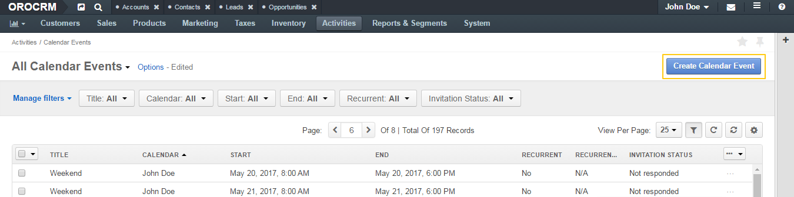
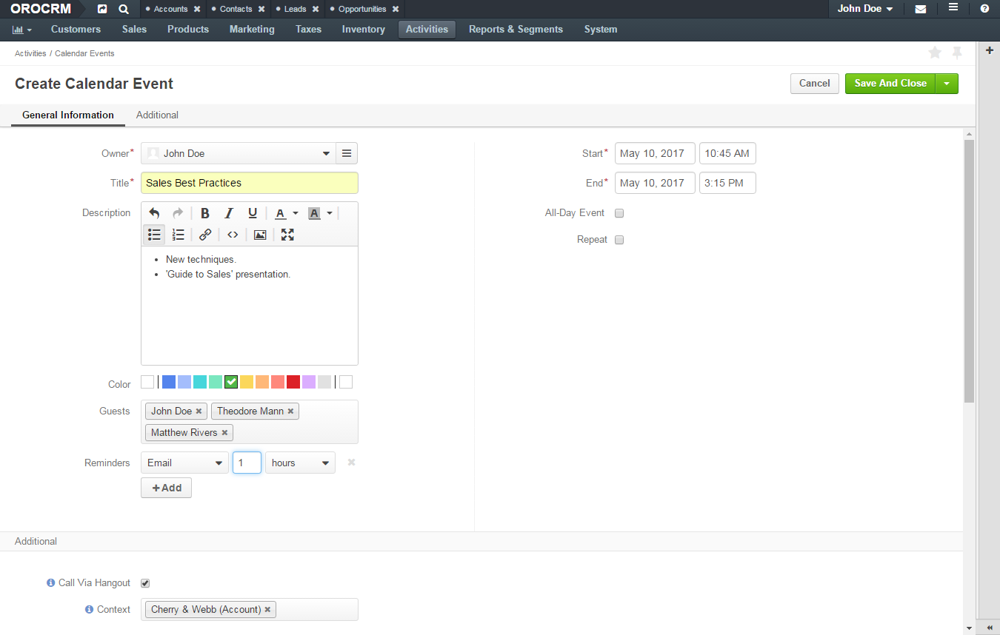
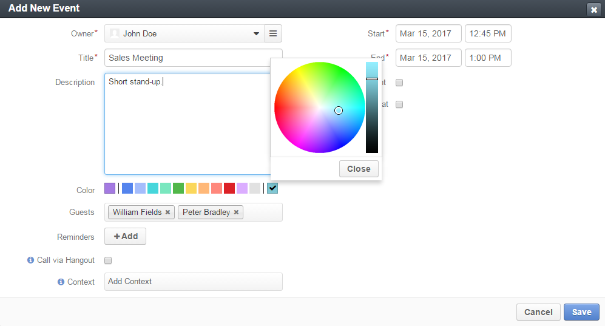
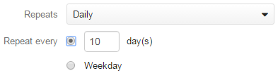
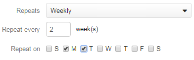
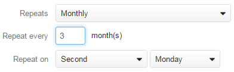
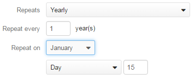
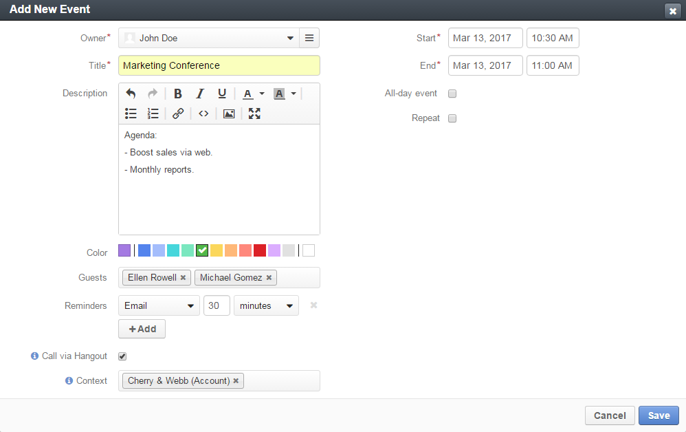

To add a calendar event when viewing a list of events:
In the main menu, navigate to Activities>Calendar Events.
The Calendar Events page opens.
On the Calendar Events page, click the Create Calendar Event button in the upper-right corner of the page.
The Create Calendar Event page opens.
On the Create Calendar Event page, fill in the required information as described in the Complete Event Information section.
Click Save and Close in the upper-right corner of the page.
When adding or editing the calendar event, fill in the following information:
Owner—A user who is eligible to manage this event and who is responsible for it. The event appears in the calendar of the owner.
Note
By default, a person who creates an event is selected as its owner. Change the owner if required. Select another user from the list. You may use the search field to quickly find the required user: start typing the name of the user to get suggestions and then click the required name. Alternatively, you may click the hamburger menu next to the Owner field and select the owner in the Select Owner dialog box.
Title—A name for your calendar event.
Description—Any details regarding the event: summary, agenda, etc. Use the embedded editor to format text, add images, links, etc.
Important
Whether the embedded editor is available, is specified in the configuration. If you have access to the My Configuration page, see the WYSIWYG settings section of the Display Settings description.
If you do not have access to the page, contact your administrator who can enable the editor at the organization level.
Color—Select the color to label the event with. The first item is the calendar color and it is selected by default. Click different color to change the setting. To customize the color using a color picker, click the last color in the line (initially it is blank).
Important
The list of available colors is specified in the system configuration. Please contact your administrator if you want to change it.
Add to ... or Calendar—You will see one of these additional settings if any system calendars are defined in the system.
Guests—People invited to the event inside and outside your company.
Click the field to select n Oro user to the event.
To add a person outside your company as a guest, type their email address in the field.
The number of guests is not limited. The event appears in the calendar of every invited Oro users.
To cancel the invitation, click the x icon next to the guest name.
Reminders—A notification about the upcoming event.
Click the +Add button to configure when and how OroCommerce and OroCRM remind the participants about the event:
To remove a reminder, click the x icon next to it.
Important
Reminders are disabled for recurring events.
Note
In Oro applications, an event start time is displayed adjusted according to the recipient’s timezone settings both in notification emails and flash messages. (That is, if the event is set to start at 7 a.m. in the organizational calendar that is run according to the New York time, the start time displayed in the reminder to the user in Tokio will be 8 p.m.)
Call via Hangout—Enable this option to plan a Google Hangout meeting for the calendar event. When enabled, a button that starts Hangout call appears on the event card and view page when viewed by the guest.
Important
For Hangouts calls to be possible, an integration with Google services should be created. Contact your administrator for more information.
Tip
For more help on Hangouts calls, see Hangouts Help on google.com.
Context—Select a record that has a meaningful relation to the event. Start entering a record name to quickly find the required user, and when the list of suggestions appears, click the required name to select it. The event is now linked to the selected item and is displayed in its Activity section.
Start—Specify day and time when the event starts. Click the day field to select a day in the calendar dialog. Click the time field to select a time from the list. Alternatively, you can type in date and time values.
Note
The time option is disabled when the All-day event is selected.
End—Specify day ant time when the event ends. Click the day field to select a day on the calendar dialog. Click the time field to select a time from the list. Alternatively, you can type in date and time values.
Note
The time option is disabled when the All-day event is selected.
All-day event—Enable this option to reserve the whole day(s) for the event.
Repeat—Enable this option for a recurring event. Once you enable it, you can configure the event schedule as described in the Event Schedule section.
You can use the following controls to configure the frequency and schedule of the recurring event. These options are available only when the Repeat option is enabled.
Repeats—Select how often the event repeats: daily, weekly, monthly, or yearly. Depending on your choice, the following configuration options appear:
For a Daily event: Specify whether an event repeats every weekday or once in several days. In the latter case type the number of days in the corresponding field.
For a Weekly event: Specify how often the event repeats (e.g., every 6 weeks) and select the days of the week when the event takes place.
For a Monthly event: Specify how often the event repeats (e.g., every 10 months) and select whether it repeats on a certain date of the month or on a particular weekday (e.g. on first Monday, third weekend day).
For a Yearly event: Specify how often the event repeats (e.g., every 2 years), select the month and whether it repeats on a certain date of the month or on a particular weekday (e.g., on first Monday, third weekend day).
Ends—Select when the event ends. The following options are available:
To add calendar events on the My Calendar page or in the Today’s Calendar widget, complete the following:
Click the empty cell that represents the desired time period. If you are adding an event from the widget, you can alternatively click the New Event button in the upper-right corner of the widget.
In the Add Calendar Event dialog box, specify the required data. For the description of the fields see the Complete Event Information section.
Click the Save button. The event appears in your calendar if you have specified yourself as an event owner or a guest.
Important
Refresh a page to update the widget after you created the new event.